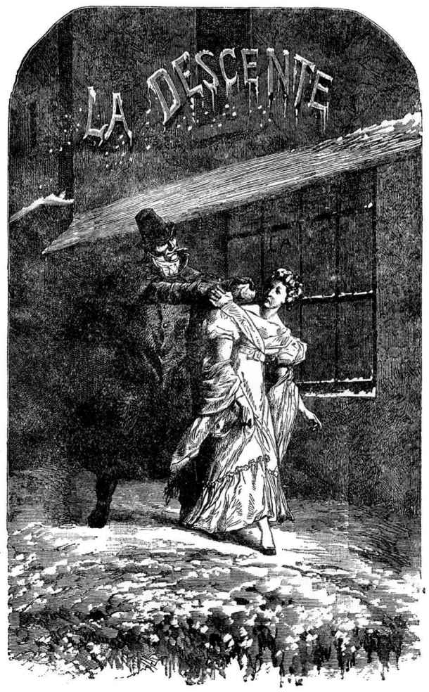

被孟费郿一带居民认为已把孩子抛弃的那位母亲，现在变成什么样了？她在什么地方？干什么事呢？
把她的小珂赛特交给德纳第夫妇以后，她继续赶路，到了滨海蒙特勒伊。
我们记得，那是一八一八年。
芳汀离开她的故乡已有十年光景。滨海蒙特勒伊的情形早已变了。正当芳汀从一次苦难陷入另一次苦难时，她的故乡却兴盛起来了。
两年以来，一种轻工业在那里发展起来了，那是小地方的大事情。
这些细节关系很大，我们认为值得把它叙述出来。我们几乎要说，把它当作重点叙述出来。
从一个不可考的时代起，滨海蒙特勒伊就有一种仿造英国黑玉和德国烧料的特别工业。那种工业素来不发达，因为原料贵，影响到工资。正当芳汀回到滨海蒙特勒伊时，那种“烧料细工品”的生产已经进行了一种空前的改革。一八一五年年底有一个人，一个大家不认识的人，来住在这城里，他想到在制造中用漆胶代替松胶，特别在手镯方面，他在做底圈时，采用只把两头靠拢的方法代替那种两头连接焊死的方法。这一点极小的改革就起了很大的作用。
那一点极小的改革确实大大降低了原料的成本，因此，首先工资可以增高，一乡都得到了实惠；第二，制造有了改进，消费者得了好处；第三，售价可以降低，利润加了三倍，厂主也得到利润。
因此，从一个办法得出三种结果。
不到三年工夫，发明这方法的人成了大富翁，那当然很好，更大的好处是他四周的人也发了财。他不是本省的人。关于他的籍贯，大众全不知道，他的往事，知道的人也不多。
据说他来到这城里时只有很少的钱，至多不过几百法郎。
他利用这一点微薄的资本来实现他精心研究出来的那种巧妙方法，他自己获得了实惠，全乡也获得了实惠。
他初到滨海蒙特勒伊时，他的服装、举动和谈吐都像一个工人。
好像在一个十二月的黄昏，他背上背个口袋，手里拿根带刺的棍，摸进这滨海蒙特勒伊小城时，正遇到区公所失火。他曾跳到火里，不顾生命危险，救出两个小孩，那两个小孩恰是警察队长的儿子，因此大家都没有想到验他的护照。从那一天起，大家都知道了他的名字，他叫马德兰伯伯。
[1] 烧料细工厂，一种以玻璃原料制造假玉、假钻石、假珍珠及其他女用饰品的工厂。